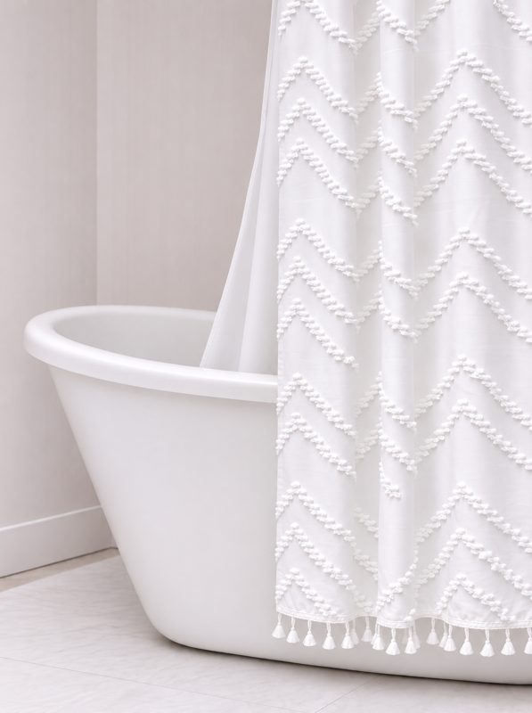
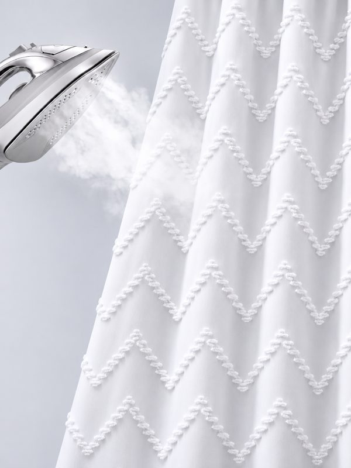

Шторка оживает: видео из двух фото карточки
Взял два ваших кадра и оживил их: ткань колышется, кисти качаются, по полотну идёт пар от утюга, камера едва движется. Это 11 секунд, 3:4 — пример уровня, итоговый ролик 15–30 с соберу по согласованному сценарию.
Исходные фото

Кадр 1 — шторка у ванны
Кадр 2 — отпариваниеКак сделаю ролик на товар
- Сценарий — из 10–15 фото выберу 4–6 кадров, порядок и движение в каждом; согласуем до генерации.
- Оживление — движение ткани, камеры, воды, рук; фактура и узор как на фото.
- Монтаж — сдержанный цвет, мягкие переходы, без лишних эффектов; 15–30 с.
- Форматы — 3:4 для карточки, 9:16 по запросу.